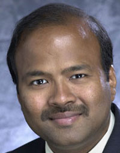
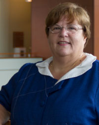

Program
Faculty Bios
Manish Agrawal, Ph.D. - Associate Professor
Manish Agrawal teaches courses in business data communications, computer networks, information systems, the development of web applications and information. An Associate Professor in the Information Systems and Decision Sciences Department, Agrawal was the recipient of USF's university-wide award recognizing teaching excellence in 2006.
An expert in the areas of software quality, offshoring and outsourcing, and e-commerce, his research interests include electronic intermediaries and the development of agent based systems for negotiations and fraud detection. An avid researcher, his work has been published in numerous academic journals, including Management Science, INFORMS Journal on Computing, Journal of Management Information Systems, IEEE Transactions on Software Engineering, Decision Support Systems and the Journal of Organizational Computing and Electronic Commerce. His research and teaching have been funded by the US National Science Foundation, the US Department of Justice, the Indo-US Science and Technology Forum and Sun Microsystems.
Agrawal earned a Ph.D. in information systems at SUNY Buffalo, and studied at the Indian Institute of Technology in Kanpur, India.
Kaushal Chari, Ph.D. - Department Chair and Professor
Professor Kaushal Chari serves as Chair of the Information Systems and Decision Sciences Department. He currently teaches a course in distributed systems and participates in numerous university committees and research efforts.
Chari’s research program covers three broad areas: software engineering, business intelligence and distributed systems. He is interested in applying quantitative as well as intelligent techniques to address problems related to IT systems, software development and business process management. Chari’s work has been published in a variety of academic journals, including Management Science, Information Systems Research, INFORMS Journal on Computing, and IEEE Transactions on Software Engineering. Chari served as the associate editor of the MIS area for Interfaces from 2002-2010, and as the vice chair of the INFORMS Information Systems Society from 2007 – 2009. He is the co-winner of the 2009 Design Science Award from INFORMS Information Systems Society.
Chari obtained a B.Tech in mechanical engineering from the Indian Institute of Technology in Kanpur, followed by an MBA and Ph.D. from the University of Iowa. He is a member of AIS, INFORMS, and Beta Gamma Sigma.

Rosann Webb Collins, Ph.D. - Associate Professor
As an associate professor in the Information Systems and Decision Sciences Department, Rosann Webb Collins develops and teaches global information systems courses for the Executive MBA program. She also facilitates several doctoral seminars and recently taught in the College of Business' undergraduate program in Singapore.
Her research focuses on global information systems and cognitive issues in systems development. She also studies community informatics and the impact of information technology on productivity. Her publications include a book, Crossing Boundaries: The Deployment of Global IT Solutions, and research articles in journals such as MIS Quarterly, Information Systems Research, IEEE Transactions on Software Engineering, The Information Society, and The Journal of the American Society for Information Science, among others.
Collins received a Ph.D. in management information systems from the University of Minnesota. She has consulted with numerous businesses, community organizations, libraries, and educational organizations on information technology use and issues. She is a member of Beta Gamma Sigma, AIS, ACM, and IEEE.
Grandon Gill, D.B.A - Professor
Grandon Gill teaches introductory and intermediate courses in programming for undergraduates and also teaches capstone courses in the MIS undergraduate, MS-MIS and Executive MBA programs. He has also taught a variety of IT courses during his tenure at USF, from computer systems concepts to doctoral case methods. He received USF's Excellence in Undergraduate Teaching Award in 2007.
Gill is passionate about using technology as a teaching tool and has studied distance learning, strategy, and practice; alternative course designs; and tools for course development and delivery, all under the general heading of informing science. His research in this area has been published in many journals, including Informing Science, Decision Sciences Journal of Innovative Education, the Journal of Information Systems Education, eLearn, and the Journal of IT Education. He has also been published multiple times in MIS Quarterly, the MIS discipline's leading journal. As his most recent article considers the MIS fields from an informing science perspective. His academic service includes stints on the editorial boards of six journals. He is currently Editor-in-Chief of Informing Science: the International Journal of the Emerging Transdiscipline and serves as a Governor and Fellow of the Informing Science Institute.
He holds an A.B. (cum laude) from Harvard College and an MBA (high distinction) and D.B.A from Harvard Business School. Gill joined USF in 2001, coming from Florida Atlantic University, where he received two teaching awards. He was previously a lieutenant in the U.S. Navy, where he served as a nuclear trained submarine officer.
Alan R. Hevner, Ph.D. - Professor and Eminent Scholar
An Eminent Scholar in the Information Systems and Decision Sciences Department, Alan Hevner also holds the Citigroup/Hidden River Chair of Distributed Technology. He teaches graduate courses in software architecture, testing, and advanced information systems analysis and design. Hevner was recently elected an AAAS Fellow by the American Association for the Advancement of Science, the world's largest general scientific society. The honor recognizes substantive contributions in this industry, particularly in the areas of design science research, cleanroom software engineering, and distributed database systems.
Emphasizing the synergy between teaching and research, Hevner's interests include information systems development, software engineering, distributed database systems, health care information systems, and telecommunications. He has coauthored chapters, books, and published 150+ papers on these topics. A significant number of his research contributions have been implemented and evaluated in business and industrial information systems; he was recently honored with a Lifetime Achievement Award for his contributions to the field of design sciences at the 2009 International Conference on Design Science Research in Information Systems and Technology.
Hevner earned his bachelors, masters, and Ph.D. degrees from Purdue University. He joined USF's faculty in 1994 after serving on the faculty of the University of Maryland and University of Minnesota. A member of ACM, IEEE, AIS and INFORMS, Hevner serves on the editorial board of MIS Quarterly. Hevner has also served as a program manager at the National Science Foundation.
Wolfgang Jank, Ph.D. - Professor
Wolfgang Jank is the Anderson Professor of Global Management in the Information Systems and Decision Sciences Department. He teaches classes in statistics and data mining in the masters, MBA, and Executive MBA programs.
An author of more than 80 refereed articles, Jank's research focuses on the application of statistics and data mining to data-driven problems in marketing, information systems, and operations management. He has been published in the Journal of Forecasting, INFORMS Journal of Computing, Marketing Science, Journal of the American Statistical Association, Journal of the Royal Statistical Society, Annals of Applied Statistics and others. He was awarded the best Information Systems Publication in 2008. He has also written three books and presented his work at national and international meetings.
Jank earned a Ph.D. in statistics from the University of Florida and a masters degree in mathematics from the Technical University of Aachen (Germany). Prior to joining the College of Business, he was an associate professor in the Department of Decisions, Operations and Information Technologies, and served as the Director of the Center for Complexity in Business at the University of Maryland's Smith School of Business.
Balaji Padmanabhan, Ph.D. - Associate Professor
Balaji Padmanabhan is the Anderson Professor of Global Management in the Information Systems and Decision Sciences Department. Currently teaching e-commerce and data mining courses, he has created undergraduate, MBA, and doctoral courses in enabling technologies.
His research addresses applications such as behavioral profiling, online fraud detection, pattern discovery from large customer databases, computational methods, information and communication technologies and their impact on business, data-driven decision making, and clickstream data. His work has been published in leading journals in both computer science and information systems fields, including Management Science, MIS Quarterly, INFORMS Journal on Computing, IEEE Transactions on Knowledge and Data Engineering, Decision Support Systems, ACM KDD, IEEE ICDM, WITS and AIS.
He received a B.Tech from the Indian Institute of Technology, Madras and a Ph.D. from New York University. An Assistant Professor at the Wharton School, University of Pennsylvania before joining USF in 2007, Padmanabhan's professional service includes work on the program committees of several industry conferences, an ad-hoc associate editor of Management Science, an editorial reviewer for the Journal of Database Management, and as vice-chair of the INFORMS College on Artificial Intelligence.
Ron Satterfield, Ph.D. - Instructor
Part of the Information Systems and Decision Sciences Department, Ron Satterfield is an instructor who teaches business and economics courses in statistics as well as courses in operations management, service operations management, mathematical modeling and lean management. He has taught courses in the "business of medicine," delivering business education to physicians and other healthcare professionals.
Satterfield's research interests include supply chain management, facility location, distribution system design, customer service, demand modeling, service operations management, operations efficiency in health care, and information technologies in operations. He has authored teaching materials in these areas, including an instructor's manual to accompany textbooks. He is also a frequent lecturer and presenter at academic conferences.
He has a Ph.D. from Indiana University and an MBA and BA in operations management from Eastern Illinois University. He joined USF in 1993 after several years of university-level teaching experience. His professional service includes auditing/oversight of credit union operations as a board member of the USF Federal Credit Union. He has been active in industry associations and currently serves on the board of the Apollo Beach Chamber of Commerce.
Rick Will, Ph.D. - Associate Professor
Rick Will is an Associate Professor in the Information Systems and Decisions Sciences Department. He teaches multimedia applications courses and classes in systems analysis and design, IT project development, and system development methodologies. Taking advantage of an opportunity to work with former U.S. President Jimmy Carter and provide students with an opportunity for meaningful, hands-on learning, Will developed and maintains - with students - an interactive, multimedia, virtual tour for the Jimmy Carter National Historic Site in Plains, GA.
His research interests include IT project management, the use of information systems for education and training, multimedia, and emerging technologies- specifically the individual and team impacts of emerging technologies. His work has been published in journals such as IEEE Computer, Information Resource Management Journal, Journal of Computer Information Systems, and Expert Systems with Applications.
Will has a BS, MBA, and Ph.D. from the University of Houston. He has served on several department, college, and university committees. He is a founding director of the Tampa Bay Area CASE Users Group and a member of Beta Gamma Sigma.